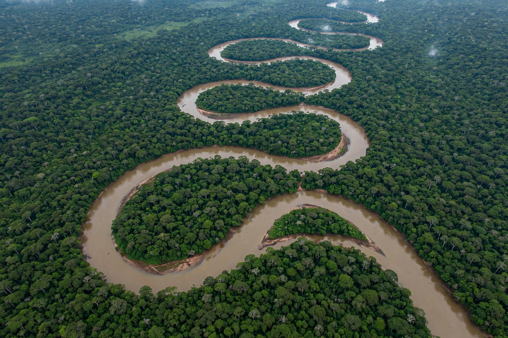

Amazon basin
From Wikipedia, the free encyclopedia

The Amazon basin is the part of South America drained by the Amazon River and its tributaries — the largest drainage basin in the world, covering some 7 million km² across Brazil, Peru, Colombia, Bolivia, Ecuador, Venezuela and the Guianas. It holds the Amazon rainforest, the world's largest tropical forest, and the Amazon River discharges more water than the next seven largest rivers combined — roughly a fifth of all river water entering the oceans.
Geography and hydrology
The basin is bounded by the Andes to the west, the Guiana Highlands to the north and the Brazilian Highlands to the south. Over 1,100 tributaries feed the main stem; the largest, the Rio Negro and Madeira River, are themselves giant rivers. Seasonal flooding inundates vast várzea forests; at the river's mouth, a tidal bore (the pororoca) travels upstream. Seasonal 'flying rivers' of atmospheric moisture from the forest water agriculture far to the south.
Ecology
The basin is Earth's richest reservoir of life — about 10% of all known species — with some 16,000 tree species alone, plus jaguars, river dolphins, anacondas and the flooded-forest fish that disperse tree seeds. Indigenous peoples, present for at least 11,000 years, shaped the forest with agroforestry and enriched terra preta soils; hundreds of Indigenous nations still live in the basin, some in voluntary isolation.
Threats
Deforestation for cattle, soy and roads has destroyed roughly a fifth of the Brazilian Amazon since 1970; scientists warn of a dieback tipping point (at perhaps 20–25% loss) where reduced rainfall feedbacks convert forest to savanna, releasing vast carbon stores. Fires, mining (including mercury-poisoning gold rushes) and hydroelectric dams compound the pressure, making the basin a central front in climate policy.